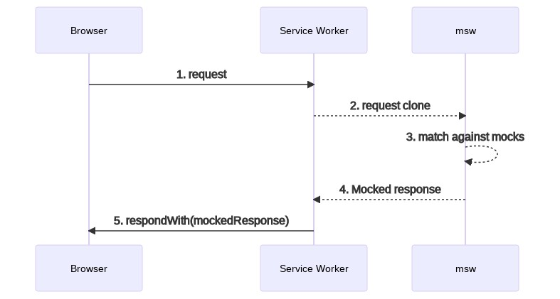

Content 1/3
- Virtual DOM
- i18n / Internationalization
- Virtualization
- Code-Splitting
- Further React Hooks
- Mock Service Worker (MSW)
Content 2/3
- Next.js
- Refs
- browserslist
- Prettier
- ESLint configuration
- Class Components
- Error Boundaries
Content 3/3
- Advanced Animation
- Concurrent Features
- React Server Components
Virtual DOM
 https://www.oreilly.com/library/view/learning-react-native/9781491929049/ch02.html
https://www.oreilly.com/library/view/learning-react-native/9781491929049/ch02.html
Summary
Replacing and rendering the whole real DOM is costly!
Virtual DOM is a representation of the actual DOM
Its purpose is to identify which parts of the real DOM need to be changed upon changes, by comparing the new virtual DOM result against the previous one.
The delta then gets applied on the real DOM.
E.g. only one
element gets updated within a long list instead of the whole list.
i18n / Internationalization
Libraries
FormatJS (aka React-Intl)
FormatJS (aka React-Intl)
FormatJS (aka React-Intl) - Support
- Singular, plural, zero, one, many translation forms
- Number / date formatting
- Hard-coded Keys as well as autogenerated ones
- Pre-compilation for run-time performance
- Built in as well as custom formatters for different translation tools
- Stores keys and translated terms in JSON-Files
Virtualization
- Technique to render only elements that are currently visible
- Reduces workload of the browser
react-window
Advice
Use virtualization as a "last resort", usually there are other places which are easier to fix.
Code-Splitting
React Lazy / Suspense
Further React Hooks
- useMemo
- useCallback
- useLayoutEffect
- useDeferredValue
- useTransition
Mock Service Worker (MSW)
It is the closest thing to a mocking server without having to
create one.
—
Mock Service Worker Docs
How it works in the browser

Source: https://mswjs.io/docs/
How it works in Node
The node-request-interceptor library is used to intercept HTTP requests.
Advantages over conventional mocking approaches
- No wrapper in the application code necessary – it can call the native fetch
- The mock is completely seamless – the application behaves the same with and without mocks
src/mocks/server.ts
src/setupTests.ts
src/handlers.ts
Next.js
Rendering Techniques supported by Next.js
- Client Side Rendering (CSR)
- Static Site Generation (SSG)
- Server Side Rendering (SSR)
The Framework for React
- Search Engine Optimization (SEO)
- Code Splitting
- File-based Routing
- Built-in CSS Support
- Image, Font & Script Optimization
- Serverless Functions (API Routes)
- Middleware (Request Interceptors)
Refs
Or: How to break out of virtual dom
Refs permit to obtain a reference to a real dom element
Focus
Automatically set focus on page load
How to forward ref?
Does not work! – ref is a special prop (the other one is key)
forwardRef!
browserslist
The browserslist configuration controls the outputted JavaScript so that the emitted code will be compatible with the browsers specified.
Polyfills still need to be added manually!
Tools
- Prettier
- ESLint
- React Developer Tools
Prettier
Your code is always consistent, as is the code from the rest of your team. No more bikeshedding!
Let's install it either locally npm i -D prettier or run it with npx prettier.
Prettier is heavily opinionated. Luckily there are a lot of options to customize it to your liking.
Add a .prettierrc.js file to your project:
module.exports = {
endOfLine: 'lf',
singleQuote: true,
trailingComma: 'all',
quoteProps: 'consistent',
}
Add an npm script to the package.json:
"scripts": {
"pretty": "prettier --write \"src/**/*.{js,json,
yml,yaml,css,scss,ts,tsx,md}\"",
},
ESLint configuration
Multiple configurations and plugins can be configured in the extends field value.
If multiple configurations or plugins specify contradicting values for the same rule, the latter will be applied.
Rules can be overridden in the rules field value.
Class Components
Class components
- are another way to write a component
- must implement a render-method
- can be enriched with lifecycle methods
- May not contain React hooks
- Are rarely used since the existence of functional components
Error Boundaries
Advanced Animation
One option: framer-motion
Concurrent Features
Concurrent Features
- New with React 18
- Allows React to prepare a part of the UI in the background
- Will mostly be used via libraries (in development)
- Suspense for data fetching
- startTransition/useTransition
- useDeferredValue
React Server Components (RSC)
React Server Components (RSC)
- Still in development
- Different from server-side rendering
- Server components are never rendered on the client
→Eliminates roundtrips, reduces bundle size